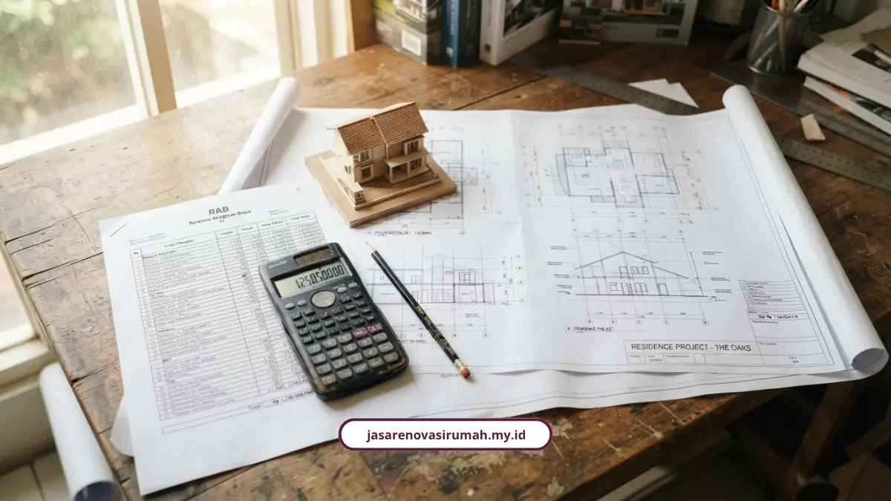
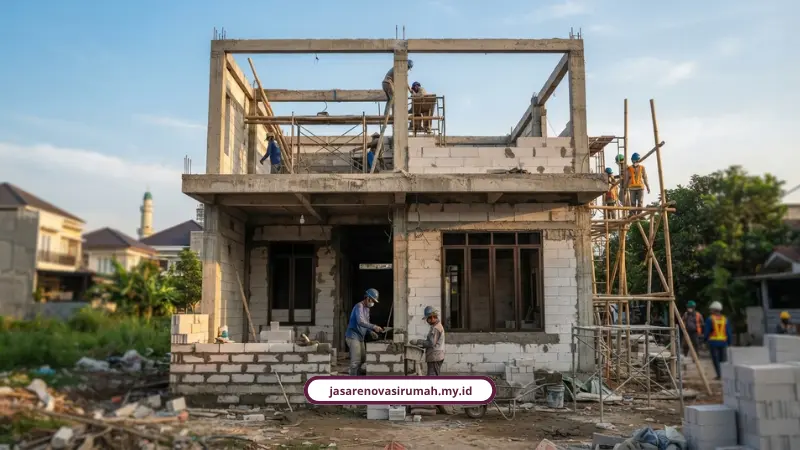

Tarif jasa arsitek Malang tahun 2026 berkisar Rp15.000 sampai Rp500.000 per meter persegi, tergantung level paket dan kompleksitas proyek. Panduan ini membantu Anda menyusun anggaran desain tanpa kaget di tengah jalan.
Pertanyaan soal tarif ini yang paling sering saya dengar dari calon klien di Malang. Wajar, karena angka di internet suka simpang siur dan bikin bingung mana yang masuk akal.
Sebagai gambaran cepat, tarif dasar mulai Rp15.000 per m2, tarif standar Rp35.000 sampai Rp50.000 per m2, dan tarif firma profesional bisa mencapai Rp500.000 per m2 untuk bangunan komersial berskala besar.
Berapa Tarif Jasa Arsitek Malang per Meter Persegi?
Tarif jasa arsitek di Malang dihitung lewat dua metode utama, yaitu per meter persegi dan persentase dari Rencana Anggaran Biaya atau RAB.
- Tarif dasar atau paket ekonomis: Rp15.000 sampai Rp25.000 per m2, mencakup konsep denah 2D dan visualisasi 3D eksterior dasar.
- Tarif standar atau menengah: Rp35.000 sampai Rp50.000 per m2, sudah termasuk gambar kerja arsitektur lengkap, denah atap, kelistrikan, plumbing, hingga struktur pondasi dan RAB.
- Tarif profesional atau firma konsultan: Rp100.000 sampai Rp500.000 per m2 untuk rumah tinggal sampai bangunan komersial skala besar.
Apa Isi Paket Basic, Standard, dan Premium?
Supaya lebih jelas, berikut gambaran acuan pasar Malang untuk tiap level paket per meter persegi.
- Paket Basic, sekitar Rp25.000 per m2: visualisasi 3D eksterior satu tampilan, denah, dan potongan bangunan.
- Paket Standard, sekitar Rp35.000 per m2: tambahan rencana atap, pola lantai, plafon, titik lampu, plumbing, dan kusen.
- Paket Premium atau best seller, sekitar Rp50.000 per m2: visualisasi 3D empat tampilan, gambar detail struktur pondasi, kolom, pembalokan, serta hitungan RAB lengkap.
Bagaimana Skema Persentase RAB Menurut Standar IAI?
Selain per m2, tarif arsitek juga bisa dihitung dari persentase total RAB sesuai standar Ikatan Arsitek Indonesia, khususnya untuk kategori rumah tinggal privat.
- Estimasi biaya bangunan di bawah Rp200 juta: imbalan jasa 8,00 persen dari total RAB.
- Estimasi biaya bangunan Rp2 miliar: imbalan jasa 6,48 persen, contohnya sekitar Rp129,6 juta.
- Estimasi biaya bangunan Rp4 miliar: imbalan jasa 5,60 persen dari total RAB.
- Kategori sosial untuk rumah tinggal non komersial di bawah 36 m2: maksimal di bawah 2,50 persen.
- Jasa pengawasan konstruksi terpisah, dikenakan 5 sampai 10 persen dari total biaya pelaksanaan fisik.
Sebagai catatan tambahan, berdasarkan Pedoman Standar Minimal INKINDO 2026, Indeks Standar Remunerasi Jawa Timur berada di angka 0,979 terhadap benchmark DKI Jakarta yang bernilai 1,000.

Berapa Biaya Pembangunan Fisik Rumah per M2 di Malang?
Sebagai pembanding, berikut estimasi biaya konstruksi fisik di area pengembangan seperti Pakis dan Lowokwaru.
- Kelas standar: Rp3.800.000 sampai Rp4.500.000 per m2, dengan pondasi batu kali, bata ringan, granit 60x60, dan atap baja ringan.
- Kelas menengah atau premium: Rp4.800.000 sampai Rp6.500.000 per m2, dengan beton K-250, kusen aluminium powder coating, dan sanitair Toto.
- Kelas mewah atau luxury: Rp7.500.000 sampai Rp12.500.000 ke atas per m2, dengan bore pile dan material impor seperti marmer atau homogeneous tile 120x120.
Apa Saja yang Memengaruhi Besar Kecilnya Tarif Arsitek?
Ada tiga faktor utama yang bikin tarif satu proyek bisa berbeda jauh dari proyek lainnya, meski luas bangunannya mirip.
- Kelengkapan dokumen: hanya denah awal atau paket komplit lengkap dengan gambar kerja DED, MEP, detail struktur, dan RAB.
- Jenis dan kompleksitas proyek: rumah sederhana, rumah mewah custom, atau bangunan komersial seperti ruko dan kafe.
- Pengalaman dan sertifikasi arsitek bersertifikat SKK atau IAI, yang memberi kepastian kualitas teknis lebih tinggi.
Muhammad Musyaffa, penulis dan tim riset arsitektur Maroon Arsitek Malang, menekankan pentingnya uji sondir tanah sebelum pengecoran serta penyusunan gambar kerja DED dan RAB terperinci agar pengeluaran bahan bangunan presisi dan bebas mark up.
Teguh Aryanto, Ketua Ikatan Arsitek Indonesia wilayah Jakarta, juga mengungkapkan bahwa tren rumah 2026 didominasi gaya modern tropis yang memadukan bentuk geometris modern dengan sentuhan kayu dan tritisan atap lebar.
Denny Setiawan, arsitek praktisi, menambahkan bahwa konsep ini memanfaatkan ventilasi silang dan material alami tanpa profil rumit, sehingga paket premium dengan detail struktur jadi lebih relevan untuk gaya ini.
Josaf Sayoko, Arsitek IAI Malang dan pendiri Inhabitat Architecture, menjelaskan pentingnya peran arsitek lokal dalam memahami karakteristik lingkungan dan komunitas di Malang, yang jadi salah satu alasan tarif jasa lokal sepadan dengan hasil yang lebih sesuai konteks setempat.
Supaya anggaran ini juga terjaga soal keamanan hukum, seluruh paket tarif di atas sudah termasuk pendampingan kontrak dalam layanan jasa arsitek Malang kami secara menyeluruh, dari konsultasi sampai serah terima.
Apa Keunggulan Tarif dari Layanan Kami?
Selain angka yang kompetitif, ada beberapa hal yang bikin tarif kami terasa lebih aman untuk kantong Anda.
- RAB transparan sejak awal tanpa biaya tersembunyi di tengah jalan.
- Garansi struktur resmi selama 3 bulan setelah serah terima.
- Konsultasi dan survei lokasi gratis sebelum Anda memutuskan lanjut.
Bapak Andi, klien di Malang, menyebut proses renovasi rumahnya berjalan sangat rapi dengan komunikasi tim yang selalu jelas dan hasil akhir yang melebihi ekspektasi. Ibu Sinta dari Surabaya juga mengaku tim arsitek banyak memberi masukan desain yang membuat rumahnya terasa lebih luas dan nyaman.
Mau Hitung Anggaran Desain Rumah Anda Sekarang?
Daripada bingung menghitung sendiri, tim kami bisa bantu susun estimasi tarif sesuai kebutuhan dan luas bangunan Anda. Cek juga layanan lainnya dari kami di https://jasarenovasirumah.my.id/layanan/jasa-lainnya untuk paket desain sampai konstruksi dalam satu pintu.
Menyusun anggaran desain memang bukan perkara sekali hitung selesai, tapi kalau sejak awal Anda tahu kisaran tarif dan apa saja yang memengaruhinya, keputusan memilih paket jadi jauh lebih tenang dan minim risiko kaget biaya.
Pertanyaan yang Sering Ditanyakan Seputar Tarif Jasa Arsitek Malang

Naura Regyna Putri
Penulis Profesional & Praktisi Konstruksi
Naura Regyna Putri adalah seorang penulis profesional yang memiliki ketertarikan mendalam pada dunia arsitektur dan konstruksi. Dengan pengalaman bertahun-tahun mengamati tren renovasi rumah, ia aktif membagikan panduan praktis, tips RAB, dan wawasan seputar material bangunan untuk membantu pemilik rumah mewujudkan hunian impian mereka dengan anggaran yang efisien.